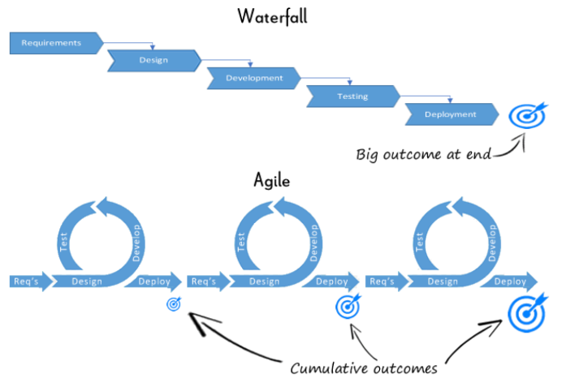

전통적인 개발 방식인 계획, 분석, 설계, 구현등의 각 단계가 확실히 끝날 때까지 매듭 짓고 넘어가는 폭포수 모델과 달리
필수적인 기능을 먼저 구현하고 고객의 요구에 따라 그때그때 주어진 문제에 민첩하게 대응하는 애자일 모델에 대해 포스팅했다.
1. 폭포수 모델과 애자일 모델

폭포수 모델은 요구사항 -> 디자인 -> 개발 -> 테스트 -> 배포의 순으로 하향식으로 진행되며 하나의 큰 결과물을 만들어 내는 전통적인 개발 방식이고 애자일 모델은 요구사항이 계속해서 추가될 수 있고 그에 따라 진행 과정이 유동적으로 바뀌며 여러개의 작은 목표들을 누적해서 결과물을 만들어 내는 개발 방식이다.
2. 애자일 모델의 원칙
애자일 모델에는 여러가지 원칙이 있다. 하나씩 살펴보면
-
고객 만족을 최우선으로 한다. 가치 있는 소프트웨어를 조기 및 지속적으로 배포하여 고객을 만족시킨다.
-
변경 요구사항을 환영한다. 개발 후반부에 변경 요구사항이 들어오더라도 받아들이며 고객 경쟁 우위를 위해 변화를 활용한다..
-
자주 소프트웨어를 배포한다. 몇 주 또는 몇 달의 짧은 기간마다 정기적으로 작동하는 소프트웨어를 배포한다.
-
사업 관계자와 개발자는 프로젝트 내내 매일 협력한다. 지속적인 소통으로 요구사항을 명확히 한다.
-
동기가 부여된 개인을 중심으로 프로젝트를 구축한다. 개인에게 필요한 환경과 지원을 제공하고 그들이 스스로 작업을 완료하도록 신뢰한다.
-
개발 팀 내 정보 전달의 가장 효율적이고 효과적인 방법은 대면 대화이다. 실시간 대화가 메시징 서비스나 이메일보다 선호된다.
-
작동하는 소프트웨어는 진행 상황의 주요 척도이다. 작은 증분이라도 실제로 작동하는 소프트웨어로 진행을 측정한다.
-
애자일 프로세스는 지속 가능한 개발을 촉진한다. 후원자, 개발자 및 사용자는 무기한으로 일정한 속도를 유지할 수 있어야 한다.
-
기술적 우수성과 좋은 설계에 지속적으로 주의를 기울이면 민첩성이 향상된다. 지속적인 기술적 개선은 제품의 설계와 품질을 높인다.
-
최대한 단순하고 적은 양의 작업을 수행하는 것이 중요하다. 미진행 작업을 최소화하고, 협업 및 간소화된 계획을 통해 효율성을 높인다.
-
최고의 아키텍처, 요구사항 및 설계는 자율 조직 팀에서 나온다. 자율성을 갖고 결정을 내릴 수 있는 팀은 더 나은 아키텍처와 설계를 만들어낸다.
-
정기적으로 팀은 더 효과적으로 변화할 방법을 반성하고 그에 따라 행동을 조정한다. 반복적인 회고를 통해 개선점을 찾고 고객 만족도를 높인다.
요약하자면 애자일 모델은 사용자로부터의 요구사항에 적극적으로 대응하고 그 요구사항을 반영한 소프트웨어를 정기적으로 배포하여 사용자의 피드백을 받아 개선시키고 소프트웨어의 질을 향상시킨다.
3. 애자일 방식의 비전과 느낀점
애자일 방식은 다른 개발 방법론에 비해 단순하고 실천 지향적이며 신속한 협조와 조율이 가능하다. 소프트웨어 개발에서 더 많은 유저의 요구사항과 피드백에 민첩하게 대응하고 주기적으로 유저에게 확인시켜 줄 수 있는 소프트웨어를 배포하기 위해서 애자일 방식은 큰 장점일 것이다. 하지만 작업의 효율성과 높은 품질에 대해서는 보장하지 못할 수 있는 만큼 개발팀은 작업간의 우선순위에 항상 신경쓰고 유저들은 양질의 피드백을 잘 전달하여 서로 상호작용 하는 것이 가장 중요한 것 같다는 생각을 했다.